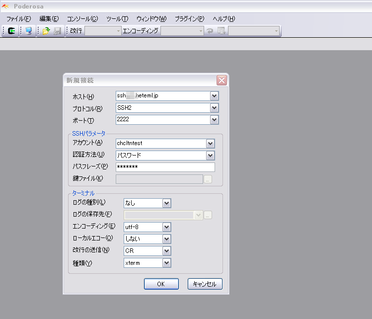
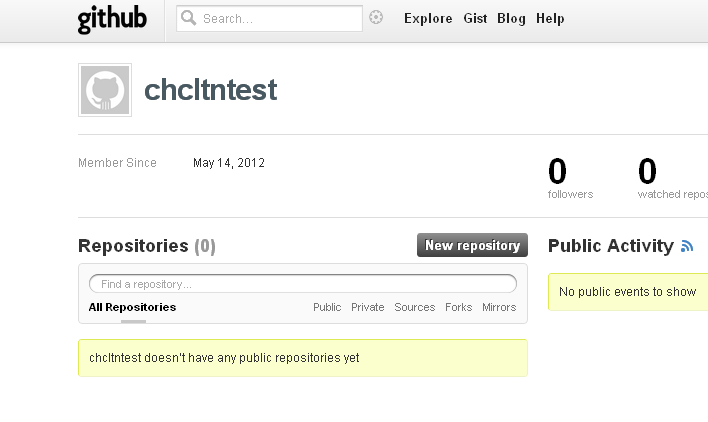

流れ
- 必要なものを用意
- hetemlでSSHを設定し、Poderosaでhetemlに接続し、鍵をつくる
- 鍵をgithubに登録しよう
- 登録できたかテストしてみよう
- さぁ、githubにpushしよう
- 何か更新したら、またaddしてコミットしてpushしてみよう
-
必要なものを用意
- Poderosa（インストールしておいてください）
- github（アカウントを作成してください）
- hetemlのコンパネ（heteml契約してください）
- hetemlFTP
-
hetemlでSSHを設定し、Poderosaでhetemlに接続し、鍵をつくる
-
hetemlでSSH設定をする
-
Poderosaを開いて、ファイル＞新規Telnet/SSH接続＞でhetemlのSSH情報を入力し、hetemlにつなぐ。

-
「はい」
-
SSHでhetemlに入ったら、ためしにpwdと打つ。自分がいまいる場所がわかる。
-
ためしにcd webとかしてみる。webフォルダに移動できる。
移動したらまたpwdと打つ。自分がいまいる場所がわかる。 -
cd ../ ってすると上のディレクトリに移れる。コマンドの練習おわり。
-
cd ~/.ssh って打つ。
No such file or directory（そんなファイルもフォルダもないよ）って言われたらOK。 -
鍵をつくります。ssh-keygen -t rsa -C "自分のメールアドレス"
-
鍵を保存する場所を選べって言われますが、そのままでいいので、
何も入力せずにEnter。 -
passphrasesは何も打たずにEnter押してよい
（本当は何か入れてほうがセキュリティ上はいいけど、後でめんどくさくなる） -
passphrasesは二回入力しろ、と言われるのでもう一度Enterを押す
-
鍵ができました。
-
-
鍵をgithubに登録しよう
-
出来た鍵を見る。hetemlFTPを開いて、/.sshフォルダ内の id_rsa.pub ってついてるほうを見る。
-
hetemlFTP上では見られないので、「ダウンロード」を押して自分のデスクトップに保存する。
-
保存された鍵。
-
メモ帳or秀丸で開いて確認。
-
この鍵を登録したいので、githubに行く。
-
右上のセッティングボタンから、SSH Keysのページに行く。
-
コピペ。保存。
-
保存したあとパスワードを聞かれるので、hetemlのパスワードを入力。
-
登録できました。これでgithubとhetemlが通信できます。
-
-
登録できたかテストしてみよう
-
$ ssh -T git@github.com と打つ。
-
ためらうことなくyes
-
Hi ユーザー名！と言われたら成功！
-
https://github.com/ユーザー名 で、「New repository」をクリック

-
リポジトリ名は何でもいい。ここでは「chcltntest.github.com」とする。
Create repositoryをクリック。 -
なんかよくわかんない画面になる。これでOK。
-
-
gitの設定
-
名前とメールアドレスをgitに設定します。
Poderosaで、git config --global user.name "あなたの名前" と打ちます。 -
次に、
git config --global user.email "あなたのメールアドレス"
と打ちます。
-
-
さぁ、githubにpushしよう
-
Poderosaに戻って、webフォルダに移る。cd webと打ちます。

-
webフォルダの中に、「chcltntest.github.com」フォルダを作ります。
フォルダを作るにはmkdirを使います。
mkdir chcltntest.github.com と打ちます。 -
ディレクトリが出来たか確認してみましょう。
-
出来たディレクトリに移動します。
cd chcltntest.github.com と打ちます。 -
ここをgit管理するよ―、と宣言します。
宣言するには git init と打ちます。 -
git管理するためのフォルダが出来ました。
これは今後、触らないようにしましょう。
-
ためしにgit statusと打ってみます。
これは、「いまgit的にはどういう状態ですか」と聞くものです。 -
変更されたファイルや追加されたファイルがまだない場合は、
「コミットするものは何もないですよ」と言われます（nothing to commit） -
さて、ここで何かを公開してみましょう。
index.htmlをアップしてみます。 -
もういちど、git statusと打ってみます。
いまアップしたindex.htmlが表示されます。 -
アップできたら、さぁ、addしてコミットしてpushしよう。
まず、addします。addとは、「いまからコミットしますよー」と宣言することです。
git add . と打ちます。「.（ドット）」は「変更されたものすべて」という意味です。 -
addに成功しても何もでません。
基本的に黒い画面は、成功しても何も言ってくれません。
冷たいですね。
恋人にはしたくないタイプです。
とにかく成功しました。 -
addしたらすぐさまコミットしましょう。
git commit -m "最初のコミットです。"
と打ちます。
メッセージは後からわかりやすいものを書きましょう。 -
準備オッケー！pushします。
はじめてのpushのときには以下を打ちます。
git remote add origin git@github.com:あなたのgithubアカウント名/リポジトリ名.git
2回目以降は打たなくてよいです。 -
準備完了。pushします。
git push -u origin master と打ちます。
gitさん、pushしてね、origin（github）の master（branch）に。という意味です。 -
yesと打ちます。
-
こうなったらpush完了！
「error」や「refused」という単語が見えたら失敗。
-
hetemlFTP側ではこうなってるはず
-
github側ではこうなってるはず
-
-
何か更新したら、またaddしてコミットしてpushしてみよう
-
hetemlFTPでちょこっとファイルをいじってみる。
いじったら保存しましょう。
-
Poderosaで「いまgit的にはどうですか」と聞く。git status
「index.htmlが修正されたよ」と言われる。 -
じゃあそれをaddしてコミットします。
addとコミットを一度にやるには&&でつなげればOK。
git add . && git commit -m "修正した理由" と打つ。 -
変更したものをpushします。
git push -u origin master -
githubにpushされました。
-
pushした履歴は「history」から見られます。
-